В 22 года я достигла всего, о чём мечтала с детства
- Переезд в Калифорнию
- Работа в ТОП-3 американской компании
- Миллион долларов на маркетплейсе Etsy
- Вышла замуж и стала мамой
- Дорогие путешествия и инвестиции в недвижимость
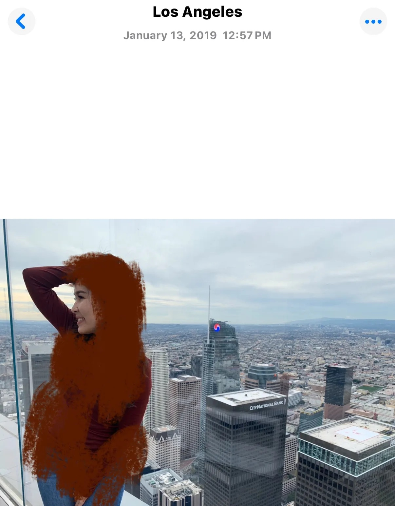
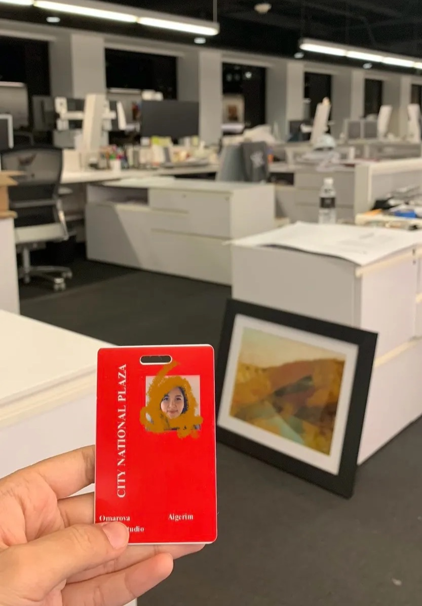
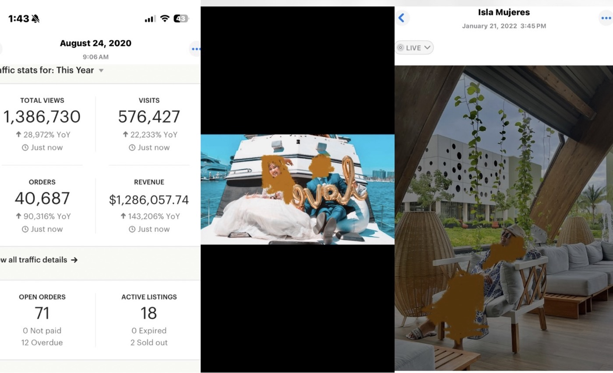
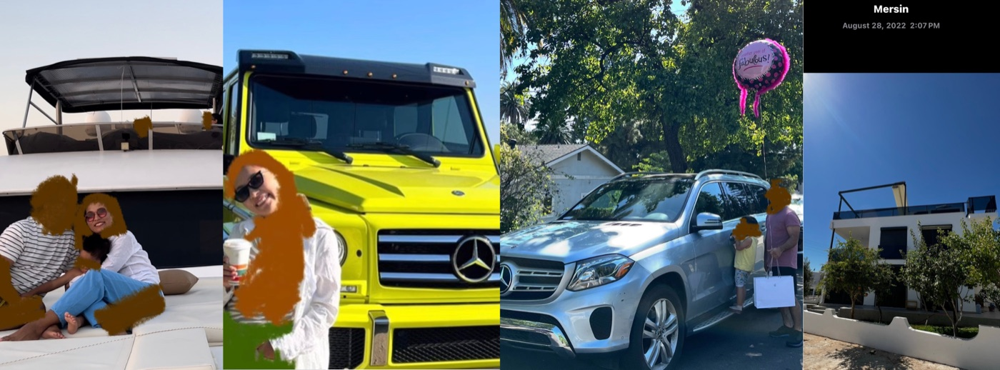
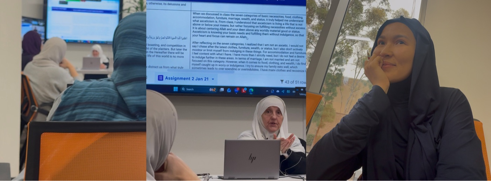
Казалось бы — живи и радуйся. Но дыра в душе стала ещё больше. На лице улыбка — внутри пусто и бессмысленно.
В Америке мне диагностировали депрессию. На фоне ужасного психоэмоционального состояния тело тоже отреагировало, и я начала болеть. Меня отправили в скорую (в Америке это ER), взяли анализы и сообщили: «У вас, возможно, рак».
Я надеялась, что все эти достижения сделают меня счастливой и дадут покой. И — разочаровалась.
На своём опыте я убедилась, что материальный мир не способен удовлетворить потребности души, созданной для вечности.
И я начала искать Бога. Диагноз «рак» (как оказалось потом — ложный) подтолкнул меня ещё больше на поиски смысла жизни.
Я вернулась в Ислам. На тот момент это спасло, дало смысл, дало понимание — зачем жить. Но через пару лет всё стало неискренним. Просто ритуалами. Намаз есть. Хиджаб есть. А огонь — потерялся. Внутри та же пустота, только теперь с чувством вины сверху.
Как чувствовать Твою Любовь и Покой, которые даёшь Ты?
— вопрос, который я задала Аллаху ﷻЯ начала копать глубже. Сначала наткнулась на СНГ-шных «исламских психологов», которые за 3 недели обучились мастерству — и, самое печальное, сами в жизни не применяли то, о чём говорят. Советы были непрактичными, иногда не соответствующими Корану и Сунне. Так жёстко подходили к Нафсу, что порой было желание уйти из Ислама — оставалась с чувством «со мной всё не так, я неисправима».
Тогда я начала искать зарубежных устазов (учителей). Мне было важно найти Наставника, чья жизнь соответствует Корану и Сунне, кто сначала следует этому сам. И одной из моих устазов стала доктор Хайфа Юнус.
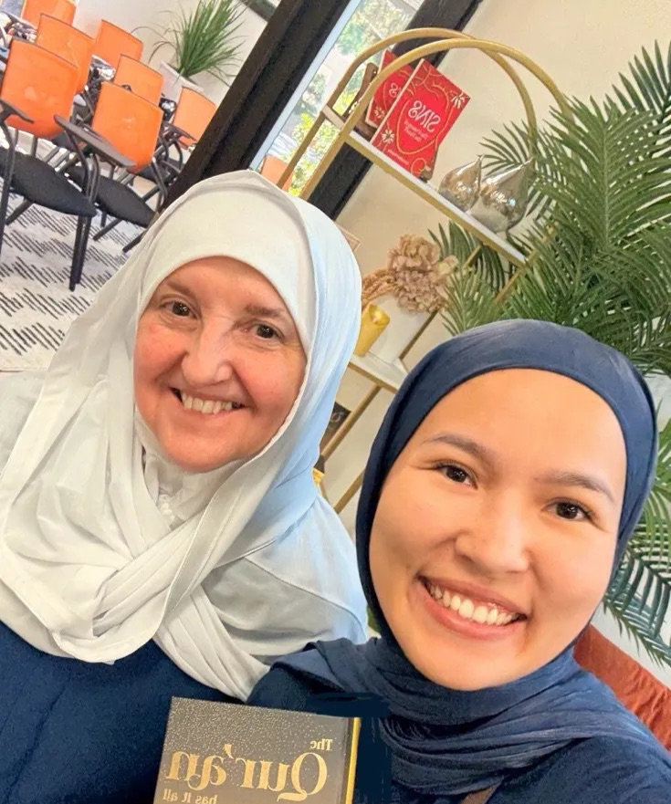
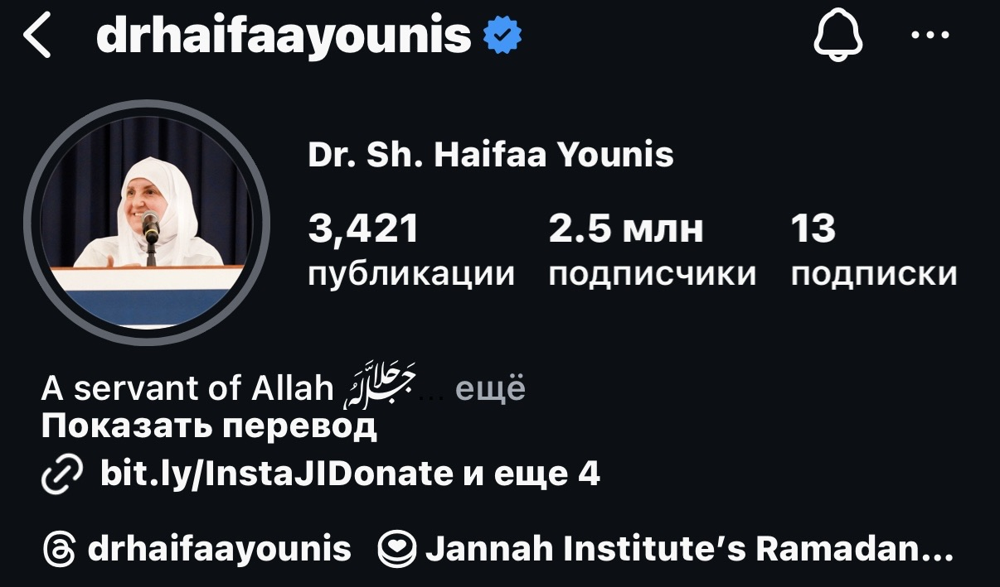
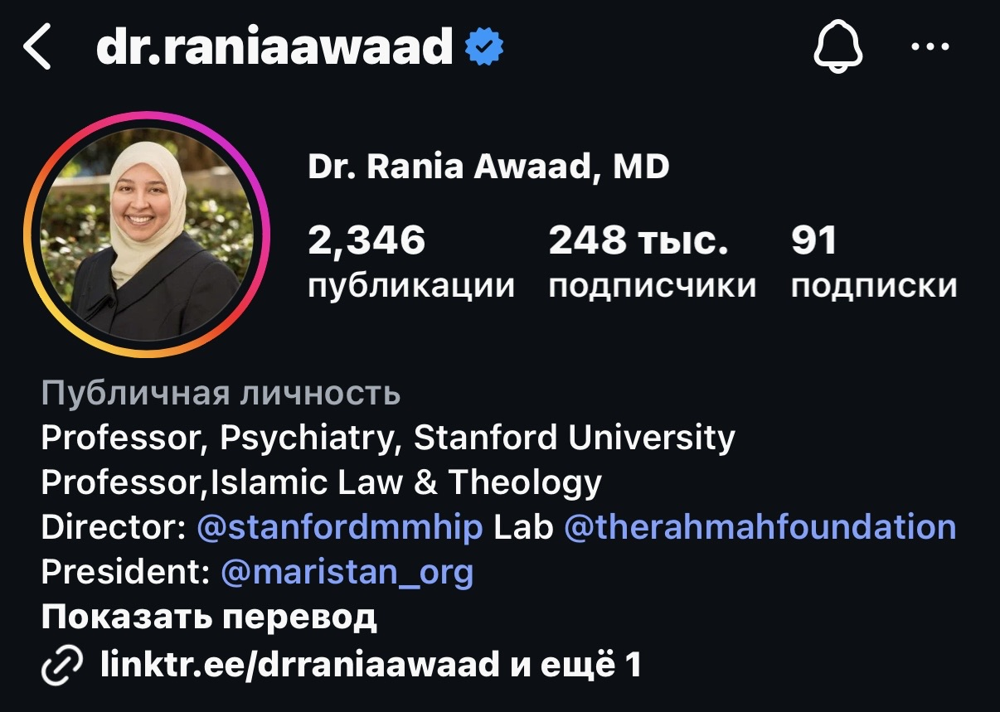
Дополнительно я обучилась нейрокоучингу — чтобы понимать, почему наш мозг так устроен, что мы знаем, как правильно, но всё равно делаем по-старому. И как это изменить.
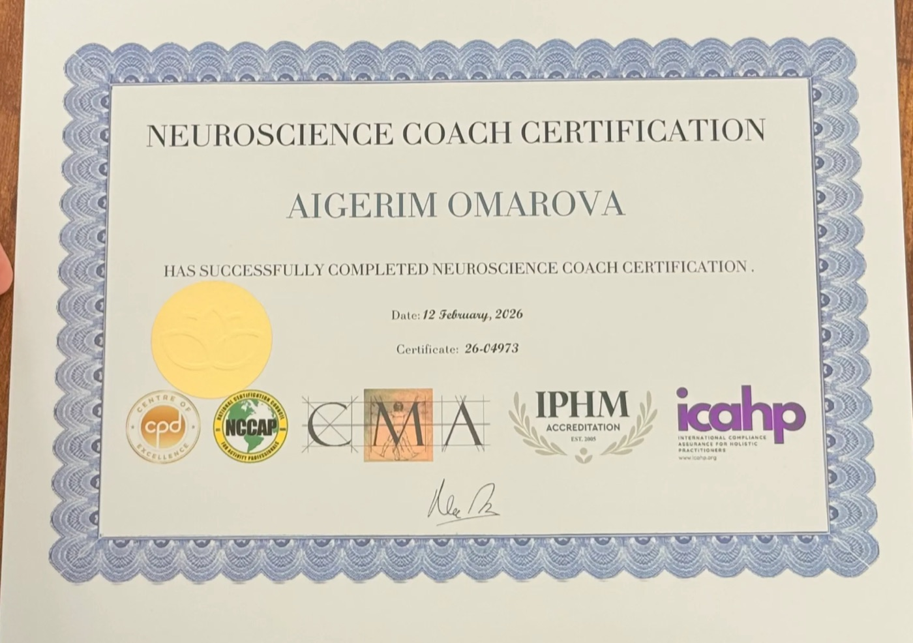
А также прошла обучение в Лондонской Академии, где преподавала доктор Рания Ауаад, которая преподаёт психиатрию в Стэнфорде.
Тогда я поняла: они применяют то, о чём говорят, в своей жизни — и это работает. Они смогли — значит, и я смогу.
Я глубоко познакомилась с понятием Нафс (эго) и очищением Нафса — Тазкией.
Очищение эго. Это центральное понятие в Исламе, которому уделяется особое внимание в Коране и Сунне. Но на русскоязычном рынке Тазкия изучена очень поверхностно.
Цель Тазкии — очистить Нафс и полюбить Аллаха. А любовь к Аллаху — это гарантия счастья в обоих мирах. Гармоничные отношения, реализация потенциала, деньги — как неизбежное следствие.
«Преуспел тот, кто очистил её (душу), и потерпел убыток тот, кто её загрязнил»
Сура Аш-Шамс, 91:9–10Слово «преуспел» أفلح в арабском очень сильное. Оно означает не просто духовный успех, а ещё и процветание, благополучие, реализацию, благодать в жизни. То есть Аллах буквально говорит: успех в жизни связан с очищением души.
Представь Аллаха светом — источником всего
Ар-Раззак
источник обеспечения
Ас-Салам
источник покоя
Аль-Вадуд
источник любви
Аль-Фаттах
открывающий двери и возможности
Но между человеком и этим Источником есть слои, которые нужно очищать, чтобы через них проходил Свет.
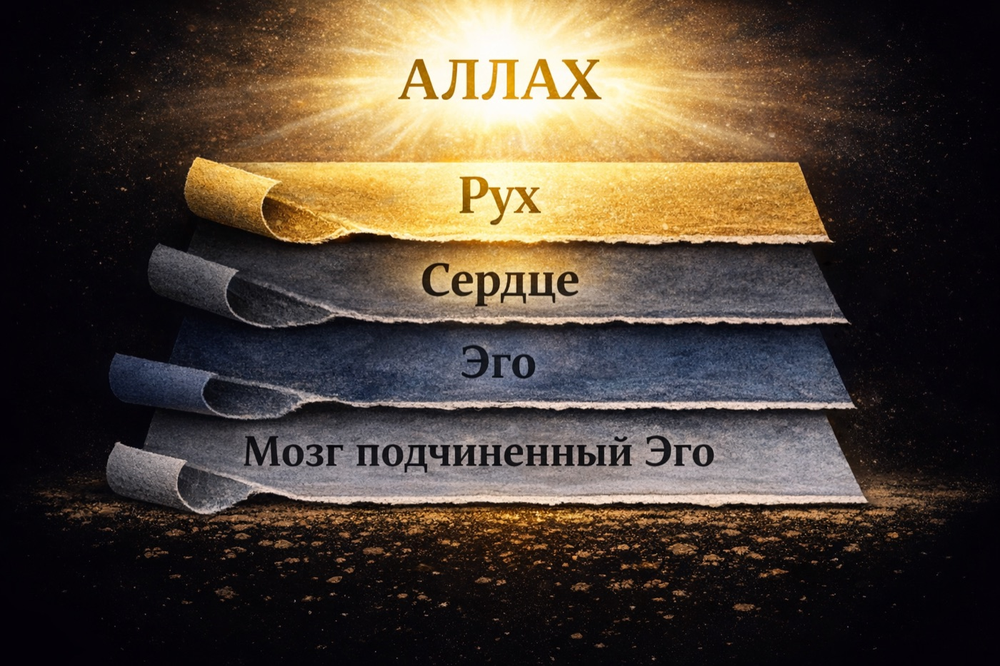
Мозг, подчинённый Эго
постоянные мысли, тревоги, сравнение, страхи
Эго (нафс)
страсти, гордыня, привязанности, контроль
Сердце — приёмник
место, где борются Рух и Нафс
Рух
та часть нас, которая уже знает Аллаха и стремится к Нему
А над всем этим — Аллах, источник сигнала. Теперь представь человека как телефон.
Аллах всегда посылает сигнал. Но если настройки сбиты, приёмник загрязнён, всё покрыто шумом — телефон не ловит сеть. И человек начинает искать покой в деньгах, любовь в людях, смысл в достижениях. Но это всё не источник — это только каналы, через которые Аллах даёт.
И вот здесь начинается Тазкия — процесс, в котором человек очищает нафс. И тогда сердце снова начинает ловить сигнал: покой, руководство, ризык, ясность, классные отношения. Потому что связь восстановилась.
Тазкия — это процесс очищения эго. Зачем его очищать? Чтобы сердце-приёмник смогло получить то, что ему нужно, от Источника — Аллаха. P.S. Избавиться от эго или «убить» его невозможно — его можно только очищать.
Чтобы помочь людям максимально эффективно, в своём подходе я объединяю нейрокоучинг и работу с Нафсом через Тазкию.
Мы с мужем открыли 3 халяль-ресторана в США и накормили более 1 000 000 мусульман и немусульман халяльной и органик-едой. Вышли на новый уровень принятия себя и друг друга. Научились достигать через баракат, а не через достигаторство.
И конечно, я занимаюсь любимым делом: помогаю людям приближаться к Аллаху. А деньги как следствие — всегда есть, но они не самоцель.
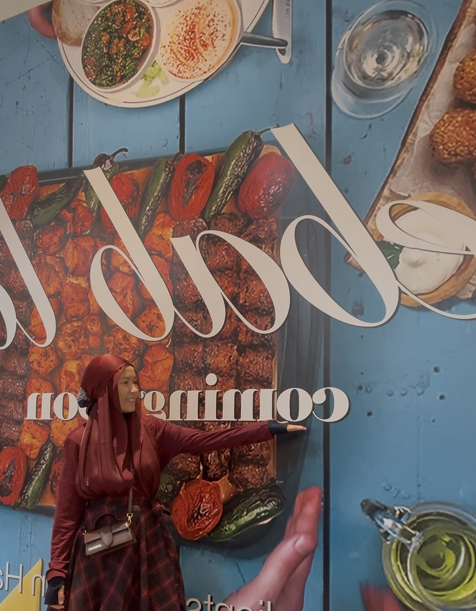
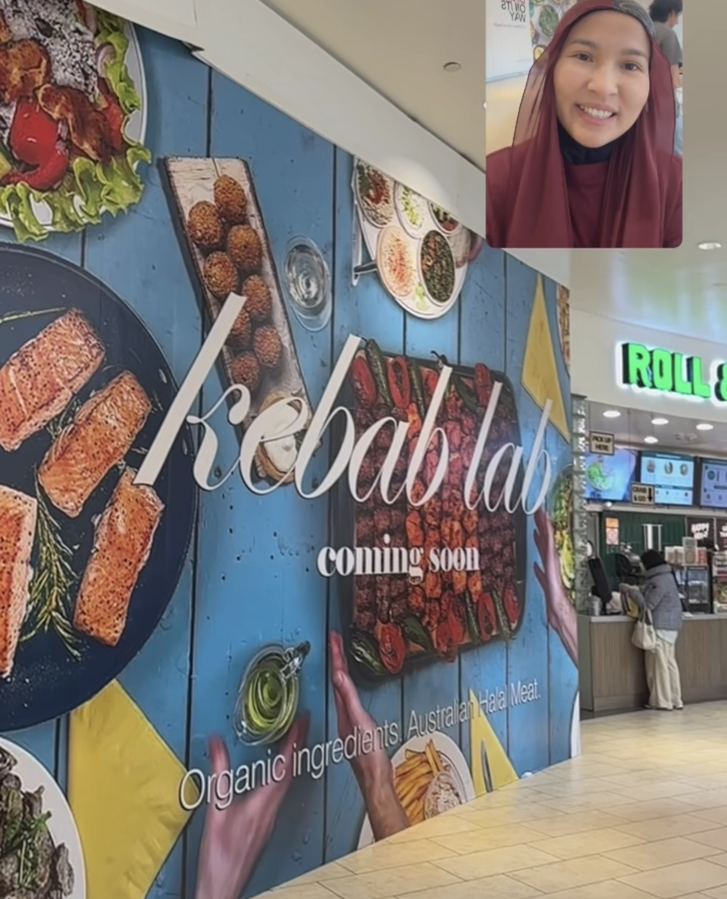
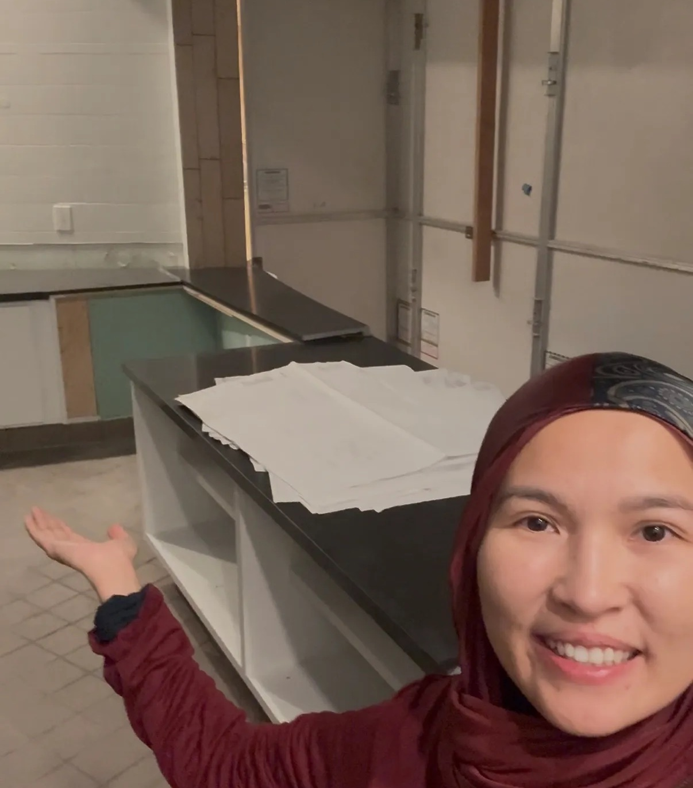